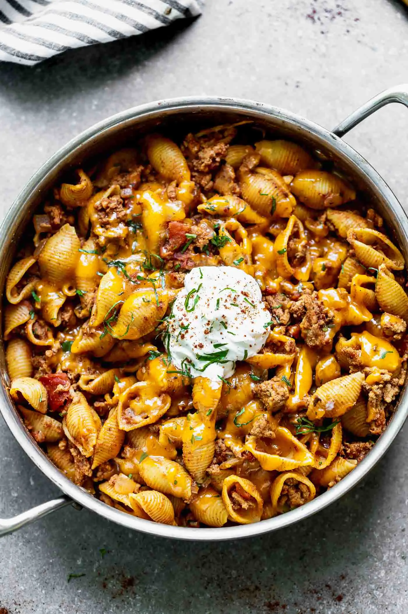

Turkey & Pasta

Description
This dish is fantastic, I usually go with leaner turkey like 97/3 but it's your
choice. The same can be said for the type of pasta, but I would definitely
not go for spaghetti. Sour cream in the center to add some more flavor if thats
your thing (the greens sprinkled on top are for aesthetics).
Ingredients
- Ground Turkey (97/3)
- Penne Pasta or similar
- Pasta Sauce of your choice
- Sour Cream
Steps
- Heat cast iron pan, apply Ground Turkey and cook until browning
- Add appropirate seasoning, I like to use salt free mixed seasoning of any kind
- Heat water to a boil and add your Pasta choice, cooking for the respective time
- Mix your pasta sauce with the finished pasta after proper draining when still hot
- Finally add the cooked ground turkey afterwards
- Slap a good 'ol scoop of sour cream right in the middle of the dish
- Bon appetit!